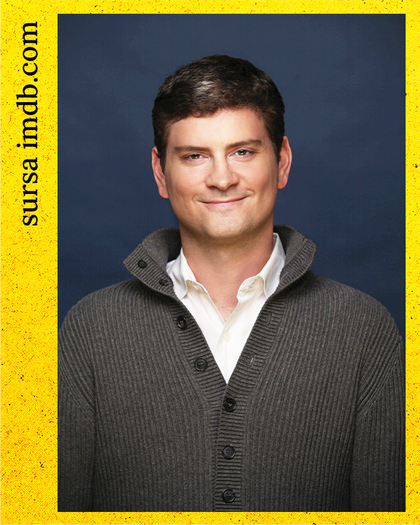

Explică filozofia într-un mod accesibil: Chiar dacă nu ai
cunoștințe prealabile de filozofie, această carte îți va explica
conceptele complexe într-un limbaj simplu și ușor de înțeles.
Vei
înțelege mai bine valorile personale și ale altora, ceea ce v-a
contribui la relații mai armonioase cu cei din jur.
Vei
fi mai conștient de impactul acțiunilor tale asupra altor
persoane și asupra societății în ansamblu.
Vei
avea abilități mai bune pentru a gestiona conflictele și
dilemele morale, evitând situațiile neplăcute.
Dacă
dorești să devii o variantă a ta mai bună și să faci alegeri
morale corecte, cartea oferă un ghid practic și inspirațional
pentru a atinge acest obiectiv.
Despre carte
Cu toții vrem să fim buni, cel puțin majoritatea dintre noi. Unde
mai pui că împărțim planeta cu o mulțime de alți oameni, iar
acțiunile noastre îi afectează pe toți. Dar a fi o persoană bună
nu este întotdeauna ușor de definit sau de atins. În fiecare zi
luăm mii de decizii, iar toate aceste decizii implică alegeri
etice, indiferent dacă ne gândim la ele sau nu.
Perfecțiunea morală este imposibilă, dar cine suntem și ce
facem contează...
Michael Schur începe cu întrebări etice simple, cum
ar fi "E ok să lovesc pe cineva în față fără niciun motiv?" și
trece la probleme morale din ce în ce mai complexe: De ce să mă
obosesc să fiu bun, când nu există consecințe pentru a fi rău? Pot
să mă bucur în continuare de artă, dacă a fost creată de oameni cu
principii de viață îndoielnice? Cât de mulți bani ar trebui să
donez? Și multe altele.
Până la sfârșitul cărții, vom ști exact cum să acționăm în fiecare
situație, astfel încât să reușim să creăm în jurul nostru ceea ce
cu toții ne dorim: o lume mai bună, pe care să o lăsăm moștenire
copiilor noștrii.

Despre autor
Michael Herbert Schur este un producător de
televiziune american, scenarist, actor și scriitor. Printre
proiectele la care a lucrat se numără serialele The Office, Parks
and Recreation, The Good Place, Brooklyn Nine-Nine, Master of
None, si Black Mirror. Efectuand o mulțime de cercetări în
domeniul filozofiei de-a lungul celor 4 ani de producție pentru
The Good Place,a dezvoltat o pasiune pentru subiect și a decide să
își canalizeze informațiile acumulate în ceea ce este practic un
manual de "Etica pentru începători", cu ajutorul unui adevărat
expert în filozofie morală, profesorul Todd May.
“O carte inteligentă, amuzantă, și scrisă cu atâta căldură, încât
nici nu-ți dai seama că devii o persoană mai bună doar citind-o.”
- Mindy Kaling -
“ Cum sa fii perfect într-o lume imperfectă” este o călătorie
amuzantă și provocatoare prin cele mai dificile întrebări ale
vieții."
- Kirkus -
“Ți-ai dorit vreodată ca un prieten să-ți explice toate conceptele
filozofice, astfel încât să poți înțelege complet subiectul cu
efort minim din partea ta? Această carte te va ajuta să navighezi
prin cele mai complicate dileme morale cu claritate și amuzament”